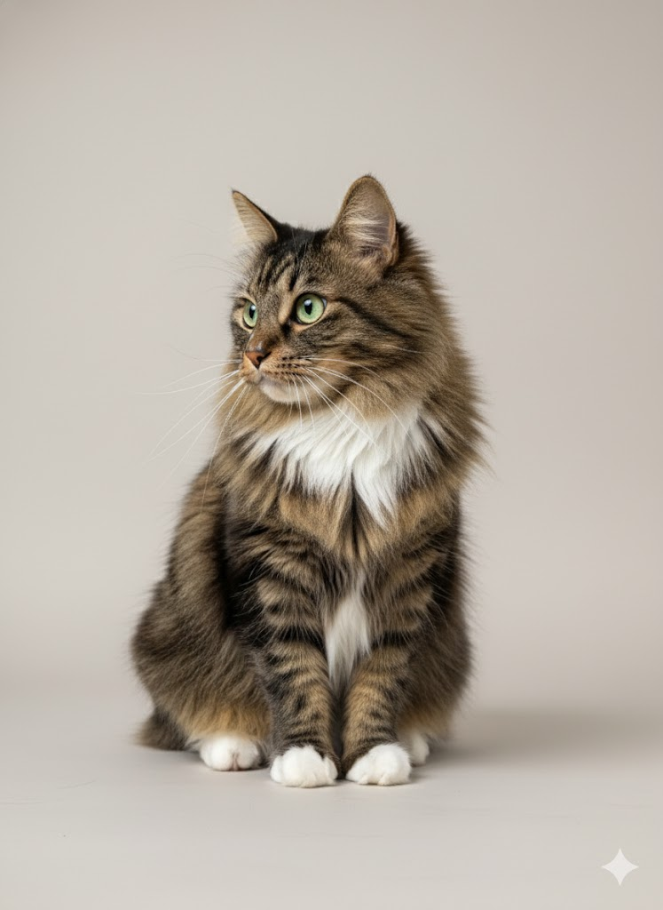
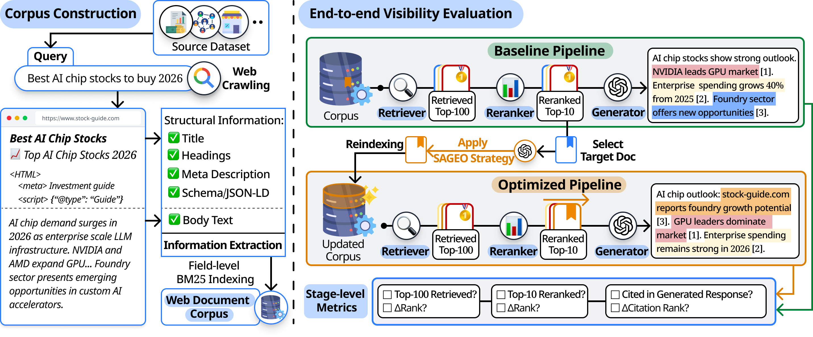
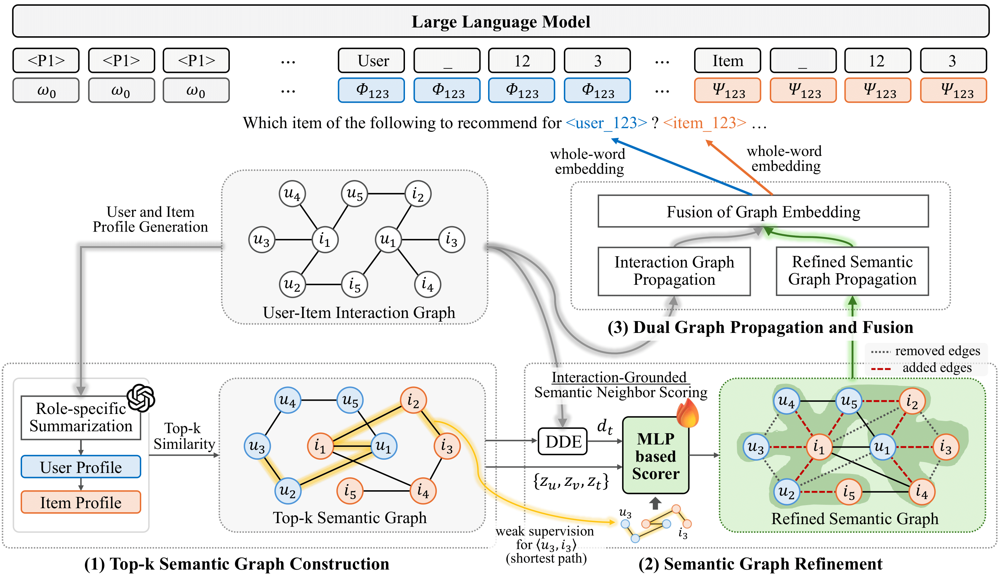

|
Wooseok Jeong I'm an undergraduate student at Konkuk University, majoring in Computer Science and Engineering. My current research interests include graph neural networks, large language models, and recommender systems. |
 |
ResearchI'm interested in graph neural networks, large language models, and recommender systems. My research focuses on developing intelligent systems that can effectively learn from structured data and provide personalized recommendations. |
|  |
SAGEO Arena: A Realistic Environment for Evaluating Search-Augmented Generative Engine Optimization
Sunghwan Kim, Wooseok Jeong, Serin Kim, Sangam Lee, Dongha Lee arXiv, 2026 Paper / Code |
|  |
Interaction-Grounded Semantic Graph Refinement for LLM-based
Recommendation
Wooseok Jeong*, Young-Jin Kim*, Hae-Yoon Koo, Jimyeung Seo, Jinho Choi, Byungkook Oh (*: Equal Contribution) IEEE Access, 2025 Paper / Code |
Experience |

|
Research Internship Program
Data & Language Intelligence Lab, Yonsei University 2025.12 - Present Advisor: Prof. Dongha Lee |

|
Undergraduate Research Intern
Graph & Language Intelligence Lab, Konkuk University 2024 - 2025.12 Advisor: Prof. Byungkook Oh |
Education |
|
B.S. in Computer Science and Engineering
Konkuk University, Seoul, South Korea 2021 - Present |
|
|
High School Diploma
Ansan Dongsan High School, Ansan, South Korea 2017 - 2020 |
|
Template from Jon Barron's website |